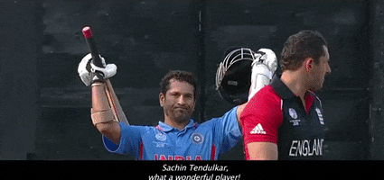

Sachin Tendulkar
- Name-Sachin Tendulkar
- Hometown-Dadar,Bombay
- DOB-24 April 1973
- Batting-Right-handed
- Description:-
- Sachin Tendulkar,is an Indian former internationl
cricketer who served as captain of the indian national
team.He is widely regarded as one of the greatest man in
in the history of cricket.